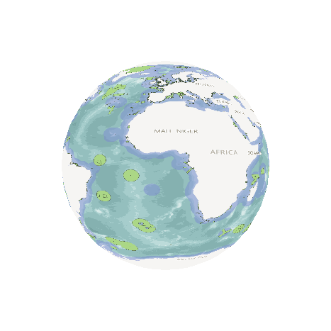
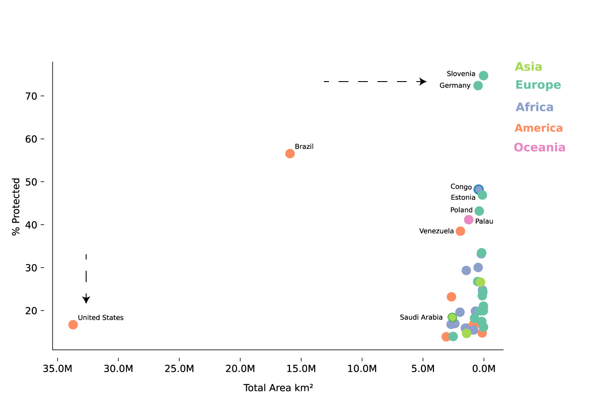
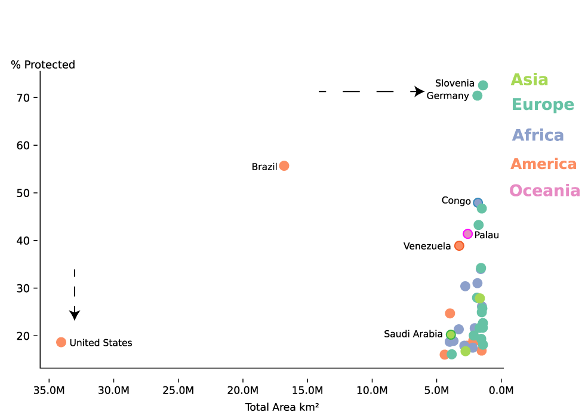
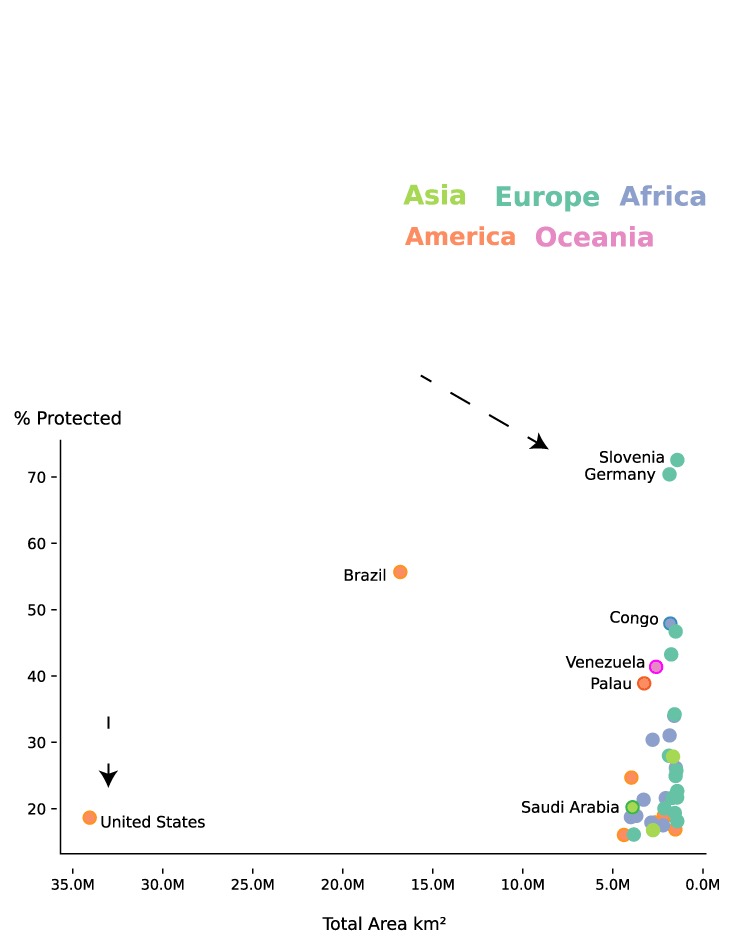
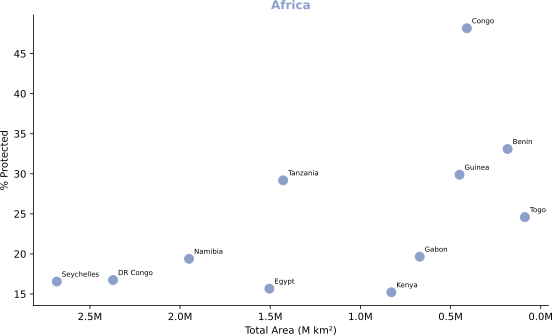
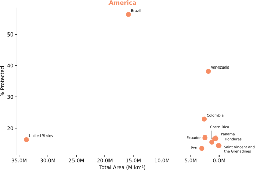
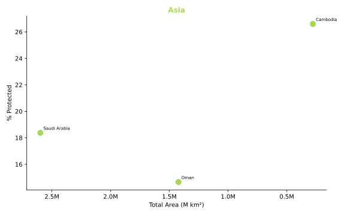
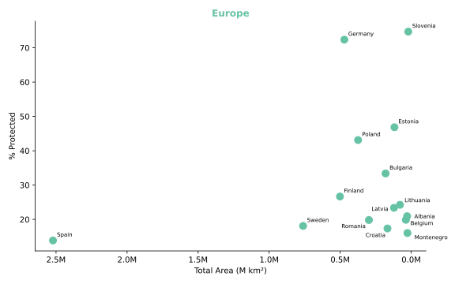
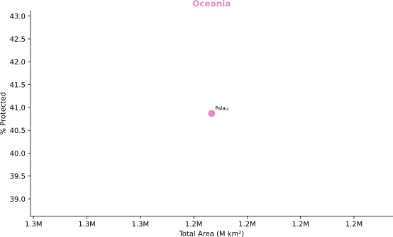

Data Investigation
A country-by-country look at the share of land and sea set aside as protected areas — and who is leading, and who is falling behind.
With Trump initiating a massive restructure of the US Forest Service, moving almost all of its employees and shuttering research programs, I thought today would be a great time to try and understand how we are doing on the whole "save the environment" thing.
By analyzing the Protected Planet database, I was able to rank the world in terms of how much of each country's land, and sea, is currently legally protected. Who is doing the best? Who is doing the worst? Let's find out.
Turns out that while the US dominated the early national park game (thanks Teddy Roosevelt), in subsequent decades, we have lagged behind the rest of the world in the creation of legally protected national areas, barely cracking the top 40.

Only a Few Countries Protect More Than 20% of Their Land & Water
Top 40 Countries Ranked by Percentage of Total Land & Water Territory with Protected Status
Slovenia & Germany
lead the world with
more than 70% protected.
The United States is the largest country
in the top 40, but protects only 16% of
its total territory.

Only a Few Countries Protect More Than 20% of Their Land & Water
Top 40 Countries Ranked by Percentage of Total Land & Water Territory with Protected Status
Slovenia & Germany
lead the world with
more than 70% protected.
The United States is the largest country
in the top 40, but protects only 16% of
its total territory.

Only a Few Countries Protect More Than 20%
of Their Land & Water
Top 40 Countries Ranked by Percentage of Total Land & Water Territory with Protected Status
Slovenia & Germany
lead the world with
more than 70% protected.
The United States is the largest
country in the top 40, but protects
only 16% of its total territory.
Fig. 1 — Top 40 countries ranked by percentage of total territory (land + EEZ) designated as protected areas. Source: WDPA, April 2026.





While much smaller than the neighbouring DRC, Congo has managed to protect 35% of its terrestrial lands and 14% of its waters, according to Protected Planet. The Congo Basin, which comprises the lands fed by the Congo River and its offshoots, is shared by the Democratic Republic of Congo, Gabon, Congo, Central African Republic, and Cameroon as well as small parts of South Sudan and Northern Angola.
Congo, Gabon, and the DRC all sit in the top 40 nations percent protected, representing the result of hard work by local governments in regulating protected areas alongside conservationist groups like the Jane Goodall Institute.
Brazil dominates the Americas category, with 56% of its total territory protected by law. This places it in the top 3, only beaten out by Slovenia and Germany.
While Brazil wins based on the sheer size of the Amazon alone, it has had trouble in the past with lax enforcement allowing huge amounts of logging and brush burn-back.
Cambodia, Saudi Arabia, and Oman are the only countries in all of Asia and Asia Minor to make the top 40. China has been reluctant to protect their oceanic fishing waters despite successfully regulating fishing of the Yangtze River in February of this year.
Cambodia started late in the game, with most regulation on protected zones coming into existence in 2008, though it has swiftly moved to create 69 protected zones, covering almost 40% of the country.
Slovenia and Germany take the top two spots with 75% & 72% of their territory protected by law. Slovenia has 2,204 protected areas in total, dedicating a large investment into ecotourism, responsible for 8.6% of the country's GDP.
While Palau doesn't have much land to speak of, being a nation of tiny Pacific islands, the country has dedicated 98% of its waters to conservation, covering more than 600,000 km².
That is about as big as the state of Kansas.
While American National Parks and protected territorial waters are centuries older than most of us, it is possible to make a new one from scratch. Despite what many policy makers would have you believe, we can actually make one whenever we want.
As of February 2026, the National Park Service is currently investigating the possibility of creating a park along the Los Angeles coast, and has 8 other proposed areas in the backlog, including Avi Kwa Ame National Monument & Emmett Till and Mamie Till-Mobley National Historical Park.
This is a data project inspired by one specific chart that annoyed me in the 2023 World Bank Atlas of Sustainable Development Goals, which can be found here.
Protected area data sourced from Protected Planet in April 2026. Country land areas and Exclusive Economic Zone (EEZ) boundaries from Britannica. Sites were deduplicated by name prior to aggregation. Percentage protection calculated as total reported area divided by combined land and EEZ territory.